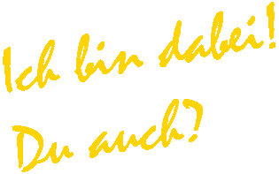

Die erlaufene Summe wird zu 100% gespendet!
Schulstiftung Seligenthal; Sonderkonto „Kinder laufen für Kinder“
Sparkasse Landshut; BIC: BYLADEM1LAH
IBAN: DE09743500000004664205
Verwendungszweck: Spende von ... für virtuellen Spendenlauf
Sparkasse Landshut; BIC: BYLADEM1LAH
IBAN: DE09743500000004664205
Verwendungszweck: Spende von ... für virtuellen Spendenlauf
Für einen Betrag von weniger als 200€ gilt der Überweisungsträger als Spendennachweis.
Wird bei einem größeren Spendenbetrag eine Spendenquittung benötigt, dann wenden Sie sich bitte an badminton@postsportverein-landshut.de
Wird bei einem größeren Spendenbetrag eine Spendenquittung benötigt, dann wenden Sie sich bitte an badminton@postsportverein-landshut.de
Teile das Event mit allen Bekannten und mach fleißig Werbung für die Gute Sache!


SCHIRMHERRSCHAFT
OB Alexander Putz & Landrat Peter Dreier